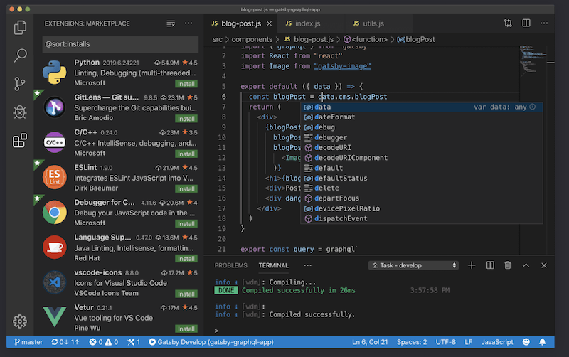
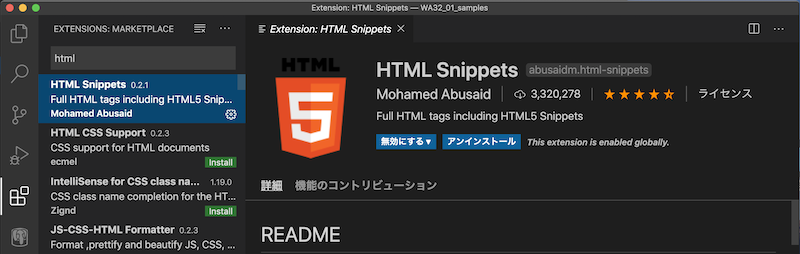
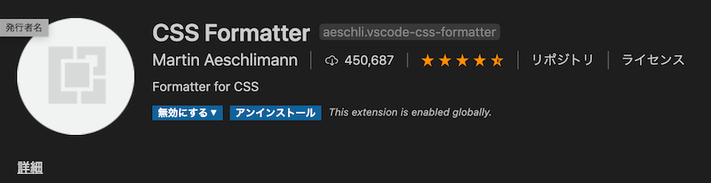
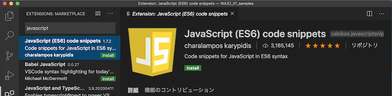
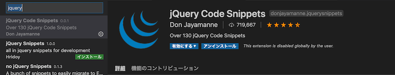
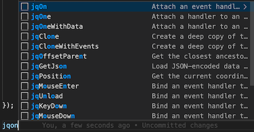
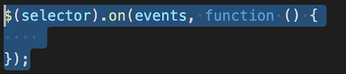
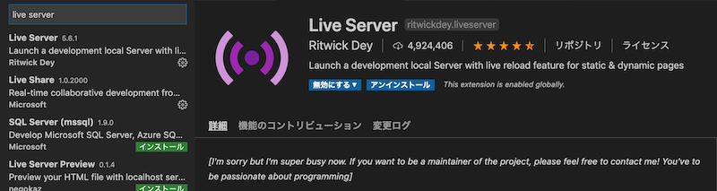
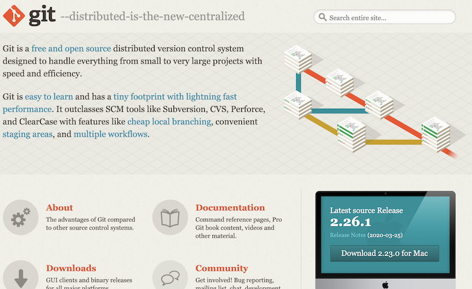

環境構築
VSCode(Visual Studio Code)

ショートカット
| Action | Mac | Windows |
|---|---|---|
| コマンドパレット | Shift + Command + 9 | Shift + Ctrl + 9 |
| エクスプローラー | Shift + Command + E | Shift + Ctrl + E |
| 機能拡張 | Shift + Command + X | Shift + Ctrl + X |
機能拡張インストール
HTML Snippets

ショートカットで html タグを入力できる
CSS Formatter

CSSを整形してくれる
JavaScript (ES6) code snippets

jQuery Code Snippets

「jq」とタイプすると候補が出る
 
Live Server

Webサーバをたてなくても、擬似的に表示できる
Git
Mac：標準インストール
動作確認
$ git --version
git version 2.21.1 (Apple Git-122.3)
Windows：インストーラダウンロード
ダウンロード

Clone （作業コピー）
$ git clone https://xxxx.com/xxxx.git
基本的に初回に利用する
Pull （更新）
$ git pull
作業プロジェクト内に対象の git情報（.git）が存在すれば、このコマンドで最新にアップデートできる